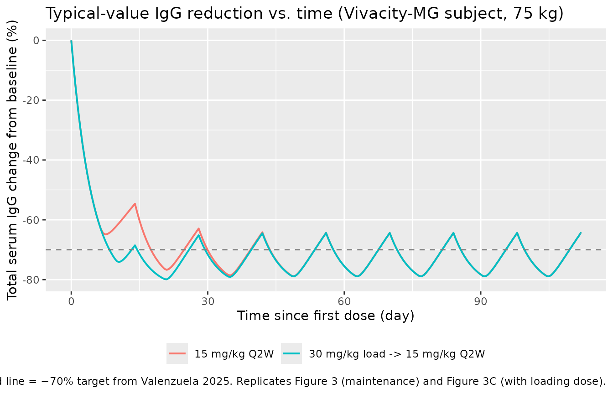
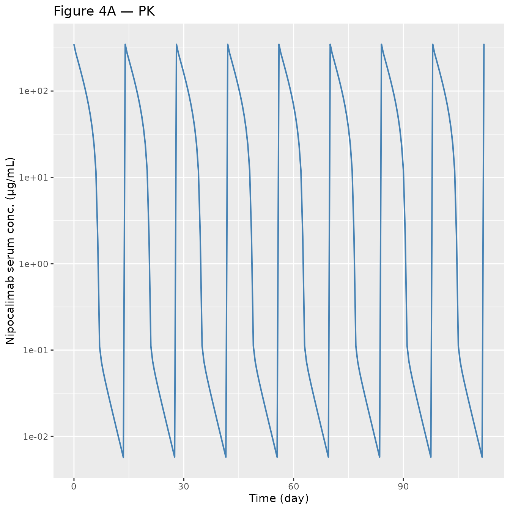
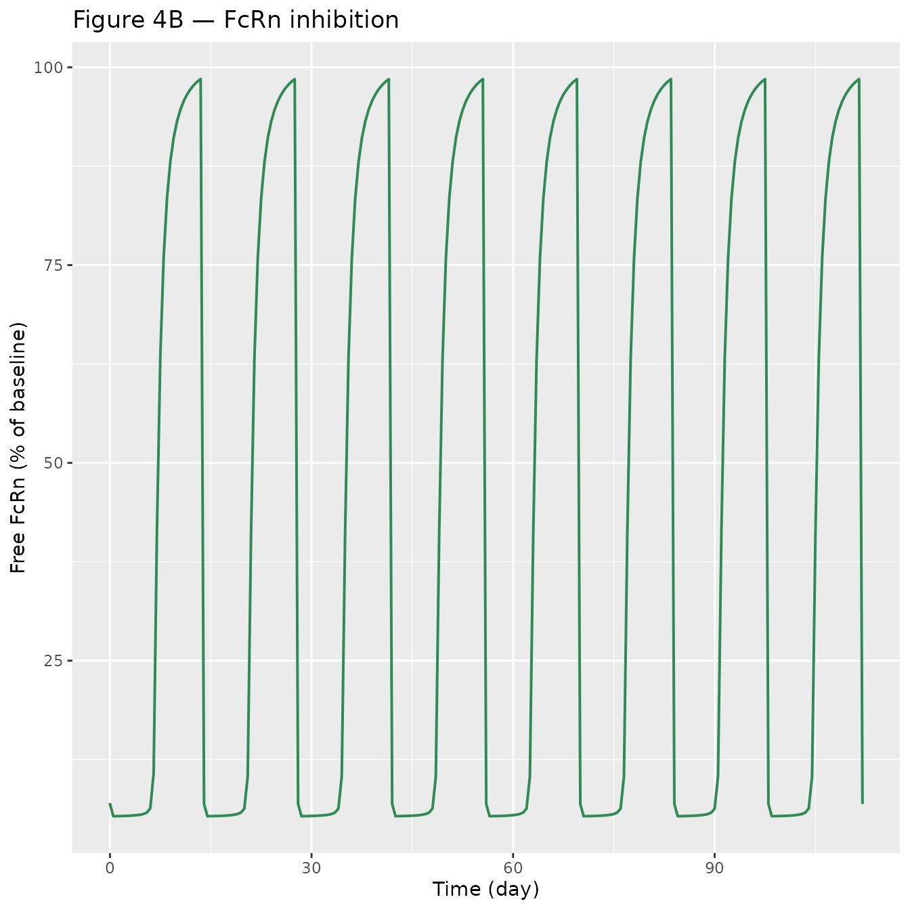
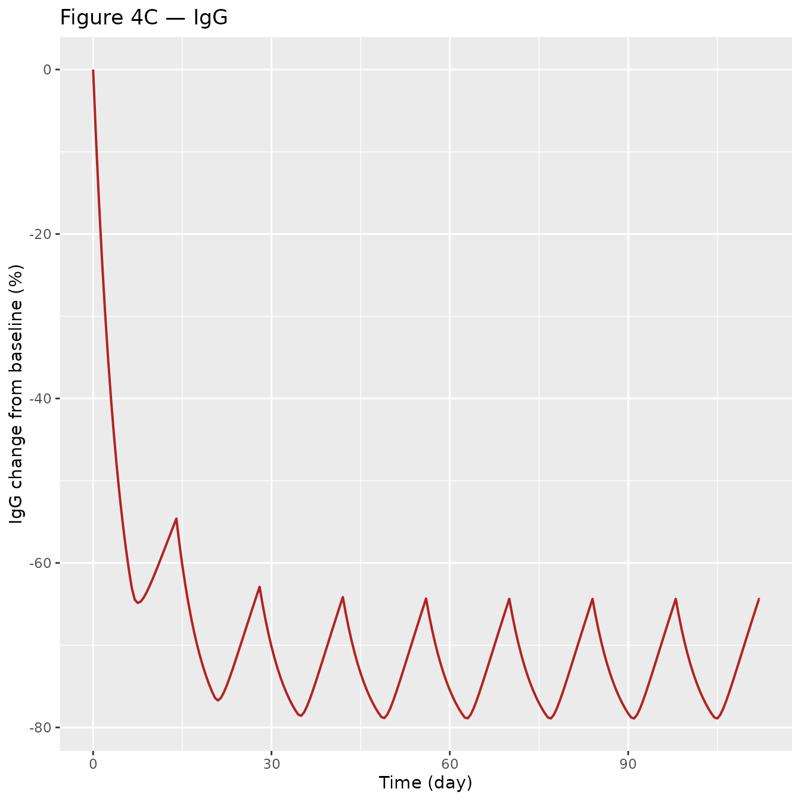
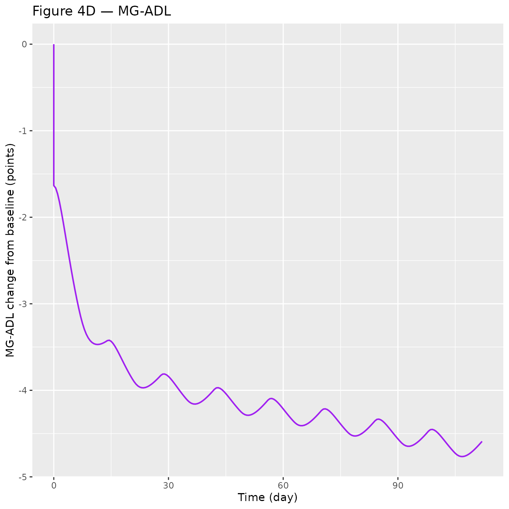

Valenzuela_2025_nipocalimab
Source:vignettes/articles/Valenzuela_2025_nipocalimab.Rmd
Valenzuela_2025_nipocalimab.Rmd
library(nlmixr2lib)
library(PKNCA)
#>
#> Attaching package: 'PKNCA'
#> The following object is masked from 'package:stats':
#>
#> filter
library(rxode2)
#> rxode2 5.0.2 using 2 threads (see ?getRxThreads)
#> no cache: create with `rxCreateCache()`
library(dplyr)
#>
#> Attaching package: 'dplyr'
#> The following objects are masked from 'package:stats':
#>
#> filter, lag
#> The following objects are masked from 'package:base':
#>
#> intersect, setdiff, setequal, union
library(tidyr)
library(ggplot2)Model and source
- Citation: Valenzuela B, Neyens M, Zhu Y, Ramchandren S, Dosne AG, Leu JH, Faelens R, Ling LE, Perez-Ruixo JJ. Nipocalimab Dose Selection in Generalized Myasthenia Gravis. CPT Pharmacometrics Syst Pharmacol. 2025;14(12):2074-2085. doi:10.1002/psp4.70109
- Description: Integrated PK/RO/IgG/MG-ADL QSS TMDD model for nipocalimab in healthy adults and generalized myasthenia gravis (Valenzuela 2025)
- Article: https://doi.org/10.1002/psp4.70109
- Supplement (PK/RO/IgG/MG-ADL model equations S4): https://onlinelibrary.wiley.com/doi/10.1002/psp4.70109
Nipocalimab is a fully human IgG1 monoclonal antibody that binds the neonatal Fc receptor (FcRn) with high affinity, blocks IgG recycling, and consequently reduces circulating IgG (including pathogenic autoantibodies in generalized myasthenia gravis, gMG). The Valenzuela 2025 analysis pools data from five phase 1 studies in healthy adults and the phase 2 Vivacity-MG study (MOM-M281-004, NCT03772587) in adults with gMG to build an integrated PK (quasi-steady-state TMDD) / FcRn receptor occupancy / total serum IgG / MG-ADL model that is used to select the 15 mg/kg Q2W maintenance dose (with a 30 mg/kg loading dose) for the pivotal phase 3 Vivacity-MG3 study.
Population
Pooled analysis (N = 228): 160 healthy adult participants and 68 adult participants with gMG (Vivacity-MG / MOM-M281-004). Age 18–83 years (mean 41.3), body weight 45–188 kg (mean 75.9), 52.6 % female. Race distribution: 68 % White, 25 % Asian, 3.5 % Black, 3.5 % Other. Healthy participants received single IV doses 0.3–60 mg/kg or weekly 15–30 mg/kg (studies MOM-M281-001, MOM-M281-007, MOM-M281-010, EDI1001, EDI1002). Vivacity-MG participants received 5–60 mg/kg IV Q2W or Q4W for up to 8 weeks, with baseline MG-ADL ranging 6–24 points (mean 9.8). Full demographics appear in Table 2 of Valenzuela 2025.
The same information is available programmatically via the model’s
population metadata:
str(rxode2::rxode2(readModelDb("Valenzuela_2025_nipocalimab"))$meta$population)
#> ℹ parameter labels from comments will be replaced by 'label()'
#> List of 15
#> $ n_subjects : int 228
#> $ n_studies : int 6
#> $ age_range : chr "18-83 years"
#> $ age_median : chr "41.3 years (mean; SD 16.2)"
#> $ weight_range : chr "45-188 kg"
#> $ weight_median : chr "75.9 kg (mean; SD 19.2)"
#> $ sex_female_pct : num 52.6
#> $ race_ethnicity : Named num [1:4] 68 3.51 25 3.51
#> ..- attr(*, "names")= chr [1:4] "White" "Black" "Asian" "Other"
#> $ disease_state : chr "Pooled healthy adult participants (160) and adult participants with generalized myasthenia gravis (68, from Viv"| __truncated__
#> $ dose_range : chr "0.3-60 mg/kg single IV dose; 5-60 mg/kg IV Q4W or Q2W (gMG cohort)"
#> $ regions : chr "Pooled phase 1 (healthy) and phase 2 (gMG) studies; populations include Japanese (study MOM-M281-010) and Chine"| __truncated__
#> $ n_subjects_healthy: int 160
#> $ n_subjects_gmg : int 68
#> $ mgadl_range_gmg : chr "6-24 points (mean 9.8; Vivacity-MG baseline)"
#> $ notes : chr "Demographics from Valenzuela 2025 Table 2. Trials: NCT02828046 (MOM-M281-001), sequential-dose phase 1 (MOM-M28"| __truncated__Source trace
The per-parameter origin is recorded as an in-file comment next to
each ini() entry in
inst/modeldb/specificDrugs/Valenzuela_2025_nipocalimab.R.
The table below collects them in one place for review.
| Equation / parameter | Value | Source location |
|---|---|---|
CL (linear serum clearance) |
0.655 L/day | Table 3 |
Vc (central volume) |
3.23 L | Table 3 |
Q (intercompartmental clearance) |
0.250 L/day | Table 3 |
Vp (peripheral volume) |
0.622 L | Table 3 |
WTonCL = WTonQ |
0.75 (fixed) | Eq. 3 |
WTonVc = WTonVp |
1 (fixed) | Eq. 3 |
FcRn0 (baseline total FcRn) |
143 nmol/L | Table 3 |
FRmax (accessible FcRn fraction) |
0.947 | Table 3 |
Kss (QSS dissociation constant) |
6.05 µg/mL (= 42.6 nmol/L) | Table 3 / Eq. 2 |
kint (complex internalization) |
62.4 day⁻¹ | Table 3 |
kdeg (free FcRn degradation) |
1.3 day⁻¹ (fixed) | Table 3 |
IgG0 (IgG baseline, non-Vivacity-MG) |
11.4 g/L | Table 3 |
FRIgG0,M281-004 |
0.777 | Table 3 |
kdeg,IgG |
0.217 day⁻¹ | Table 3 |
IgK (FcRn-mediated IgG recycling) |
5.08 | Table 3 / Eq. 5 |
ke0 (IgG effect-compartment rate) |
0.414 day⁻¹ | Table 3 |
S_IgG |
−0.216 points per 10 % IgG red. | Table 3 / Eq. 6 |
E_IgG |
0.871 | Table 3 |
IDec_placebo |
−1.08 points | Table 3 |
E_ADL |
1.23 | Table 3 |
S_placebo |
−0.0594 points/week | Table 3 |
| PK ODE (dAtotal/dt) | n/a | Supplement Eq. 1 |
| Cfree QSS solution | n/a | Supplement Eq. 2 |
| WT allometry | n/a | Supplement Eq. 3 |
| IgG indirect-response (dIgG/dt) | n/a | Supplement Eq. 4 |
k_rec_IgG = k_deg_IgG × IgK / (1+IgK) |
n/a | Supplement Eq. 5 |
| MG-ADL model | n/a | Supplement Eq. 6 |
The nipocalimab molecular weight 142 kDa, derived from the paper’s own unit check (a 15 mg/kg dose in a 75 kg participant delivers 1125 mg ≡ 7.92 µmol; page 2082), is used inside the model only for converting the published FcRn0 estimate (nmol/L → ug/mL) and the additive PK RUVs (nmol/L → ug/mL) so every drug-FcRn concentration quantity sits on a single ug/mL scale consistent with dosing in mg and volumes in L.
Virtual cohort
Original observed data are not publicly available. The figures below
simulate a representative gMG subject (the Vivacity-MG / MOM-M281-004
population used in paper Figure 4 and Figure 3) plus a representative
healthy participant for the single-dose NCA check. Because paper Figures
3 and 4 depict typical-value predictions, we zero out between-subject
variability via rxode2::zeroRe().
MW_nipocalimab <- 142000 # g/mol, as used inside the model
mg_per_kg <- 15 # maintenance dose level
wt_kg <- 75 # reference body weight
mgadl_bl <- 9.8 # Vivacity-MG cohort mean baseline MG-ADL
dose_mg <- mg_per_kg * wt_kg
load_mg <- 30 * wt_kg # 30 mg/kg loading doseSimulation
mod <- readModelDb("Valenzuela_2025_nipocalimab")
mod_typical <- rxode2::zeroRe(mod)
#> ℹ parameter labels from comments will be replaced by 'label()'
# ---- Scenario 1: 15 mg/kg Q2W maintenance, no loading dose, gMG participant ----
q2w_times <- seq(0, 112, by = 14) # dose every 14 days for 16 weeks
obs_times <- sort(unique(c(seq(0, 112, by = 0.5), q2w_times + 0.001)))
ev_q2w <- et(id = 1)
for (td in q2w_times) {
ev_q2w <- et(ev_q2w, amt = dose_mg, cmt = "central", time = td, id = 1)
}
ev_q2w <- et(ev_q2w, time = obs_times, cmt = "Cc", id = 1)
ev_q2w <- et(ev_q2w, time = obs_times, cmt = "pctUnoccupiedFcRn", id = 1)
ev_q2w <- et(ev_q2w, time = obs_times, cmt = "IgG_obs", id = 1)
ev_q2w <- et(ev_q2w, time = obs_times, cmt = "dMGADL", id = 1)
icov_gmg <- data.frame(
id = 1, WT = wt_kg, ELISA = 0, PHASE1 = 0,
STUDY_M281_004 = 1, MGADL = mgadl_bl
)
sim_q2w <- rxode2::rxSolve(mod_typical, ev_q2w, iCov = icov_gmg,
returnType = "data.frame")
#> ℹ omega/sigma items treated as zero: 'etalcl', 'etalvc', 'etalFcRn0', 'etalIgG0', 'etalkdeg_IgG', 'etalIgK', 'etaIDecplacebo', 'etaSIgG', 'etaSplacebo'
sim_q2w <- sim_q2w[!duplicated(sim_q2w$time), ]
# ---- Scenario 2: 30 mg/kg loading + 15 mg/kg Q2W maintenance ----
load_times <- c(0, seq(14, 112, by = 14)) # loading at day 0 (30 mg/kg), then maintenance
ev_load <- et(id = 1)
ev_load <- et(ev_load, amt = load_mg, cmt = "central", time = 0, id = 1)
for (td in load_times[-1]) {
ev_load <- et(ev_load, amt = dose_mg, cmt = "central", time = td, id = 1)
}
ev_load <- et(ev_load, time = obs_times, cmt = "Cc", id = 1)
ev_load <- et(ev_load, time = obs_times, cmt = "pctUnoccupiedFcRn", id = 1)
ev_load <- et(ev_load, time = obs_times, cmt = "IgG_obs", id = 1)
ev_load <- et(ev_load, time = obs_times, cmt = "dMGADL", id = 1)
sim_load <- rxode2::rxSolve(mod_typical, ev_load, iCov = icov_gmg,
returnType = "data.frame")
#> ℹ omega/sigma items treated as zero: 'etalcl', 'etalvc', 'etalFcRn0', 'etalIgG0', 'etalkdeg_IgG', 'etalIgK', 'etaIDecplacebo', 'etaSIgG', 'etaSplacebo'
sim_load <- sim_load[!duplicated(sim_load$time), ]Replicate published figures
Figure 3 / 4 — IgG change from baseline under 15 mg/kg Q2W, ± loading dose
Replicates the IgG-reduction panels of Figure 3 (maintenance-only) and Figure 3C (with 30 mg/kg loading) of Valenzuela 2025. The paper reports a steady-state mean IgG CFB of approximately −70 % for 15 mg/kg Q2W.
baseline_igg_gmg <- 11.4 * 0.777 # IgG0 * FRIgG0_M281_004
igg_df <- bind_rows(
sim_q2w |> transmute(time, IgG = total_IgG, regimen = "15 mg/kg Q2W"),
sim_load |> transmute(time, IgG = total_IgG, regimen = "30 mg/kg load -> 15 mg/kg Q2W")
) |>
mutate(IgG_CFB_pct = 100 * (IgG - baseline_igg_gmg) / baseline_igg_gmg)
ggplot(igg_df, aes(time, IgG_CFB_pct, colour = regimen)) +
geom_line(linewidth = 0.7) +
geom_hline(yintercept = -70, linetype = "dashed", colour = "grey50") +
labs(
x = "Time since first dose (day)",
y = "Total serum IgG change from baseline (%)",
colour = NULL,
title = "Typical-value IgG reduction vs. time (Vivacity-MG subject, 75 kg)",
caption = paste("Dashed line = −70% target from Valenzuela 2025. Replicates",
"Figure 3 (maintenance) and Figure 3C (with loading dose).")
) +
theme(legend.position = "bottom")
Figure 4 — Integrated PK, FcRn occupancy, IgG, and MG-ADL over the Q2W dose interval
Replicates Figure 4 panels A–D of Valenzuela 2025 for a typical 75 kg gMG participant on 15 mg/kg Q2W (without loading dose).
# Cc is already in ug/mL (model concentration unit).
sim_plot <- sim_q2w |>
mutate(pctRO = 100 - pctUnoccupiedFcRn,
IgG_CFB_pct = 100 * (total_IgG - baseline_igg_gmg) / baseline_igg_gmg)
p_pk <- ggplot(sim_plot, aes(time, Cc)) +
geom_line(colour = "steelblue", linewidth = 0.7) +
scale_y_log10() +
labs(x = "Time (day)", y = "Nipocalimab serum conc. (µg/mL)",
title = "Figure 4A — PK")
p_ro <- ggplot(sim_plot, aes(time, 100 - pctRO)) +
geom_line(colour = "seagreen", linewidth = 0.7) +
labs(x = "Time (day)", y = "Free FcRn (% of baseline)",
title = "Figure 4B — FcRn inhibition")
p_igg <- ggplot(sim_plot, aes(time, IgG_CFB_pct)) +
geom_line(colour = "firebrick", linewidth = 0.7) +
labs(x = "Time (day)", y = "IgG change from baseline (%)",
title = "Figure 4C — IgG")
p_mgadl <- ggplot(sim_plot, aes(time, dMGADL)) +
geom_line(colour = "purple", linewidth = 0.7) +
labs(x = "Time (day)", y = "MG-ADL change from baseline (points)",
title = "Figure 4D — MG-ADL")
# Stack with patchwork if available; otherwise print separately
if (requireNamespace("patchwork", quietly = TRUE)) {
patchwork::wrap_plots(p_pk, p_ro, p_igg, p_mgadl, ncol = 2)
} else {
print(p_pk); print(p_ro); print(p_igg); print(p_mgadl)
}



PKNCA validation
For NCA we simulate a single 15 mg/kg IV dose (healthy participant, ELISA assay, Phase 1 protocol) and compute standard PK parameters. The paper does not publish a formal NCA table, so we perform a self-consistency check: Cmax, Tmax, AUC, and half-life should track the two-compartment linear elimination behavior of nipocalimab within the linear-CL range, before the target-mediated component fully engages.
# Single-dose healthy adult scenario for NCA
nca_times <- sort(unique(c(0, 0.04, 0.083, 0.25, 1, 2, 4, 8,
seq(0.5, 28, by = 0.5))))
ev_sd <- et(id = 1) |>
et(amt = dose_mg, cmt = "central", time = 0, id = 1) |>
et(time = nca_times, cmt = "Cc", id = 1)
icov_hv <- data.frame(
id = 1, WT = wt_kg, ELISA = 1, PHASE1 = 1,
STUDY_M281_004 = 0, MGADL = 0
)
sim_sd <- rxode2::rxSolve(mod_typical, ev_sd, iCov = icov_hv,
returnType = "data.frame")
#> ℹ omega/sigma items treated as zero: 'etalcl', 'etalvc', 'etalFcRn0', 'etalIgG0', 'etalkdeg_IgG', 'etalIgK', 'etaIDecplacebo', 'etaSIgG', 'etaSplacebo'
# Cc is already in ug/mL (matches the paper's display unit).
sim_nca <- sim_sd |>
dplyr::filter(!is.na(Cc), time >= 0) |>
dplyr::mutate(
id = 1L,
treatment = "15 mg/kg IV SD, healthy"
) |>
dplyr::select(id, time, Cc, treatment)
dose_df <- data.frame(
id = 1, time = 0, amt = dose_mg,
treatment = "15 mg/kg IV SD, healthy"
)
conc_obj <- PKNCA::PKNCAconc(sim_nca, Cc ~ time | treatment + id)
dose_obj <- PKNCA::PKNCAdose(dose_df, amt ~ time | treatment + id)
intervals <- data.frame(
start = 0,
end = Inf,
cmax = TRUE,
tmax = TRUE,
aucinf.obs = TRUE,
half.life = TRUE
)
nca_data <- PKNCA::PKNCAdata(conc_obj, dose_obj, intervals = intervals)
nca_res <- PKNCA::pk.nca(nca_data)
knitr::kable(as.data.frame(nca_res), digits = 2,
caption = "PKNCA summary for a single 15 mg/kg IV dose (healthy; typical-value simulation).")| treatment | id | start | end | PPTESTCD | PPORRES | exclude |
|---|---|---|---|---|---|---|
| 15 mg/kg IV SD, healthy | 1 | 0 | Inf | cmax | 348.30 | NA |
| 15 mg/kg IV SD, healthy | 1 | 0 | Inf | tmax | 0.00 | NA |
| 15 mg/kg IV SD, healthy | 1 | 0 | Inf | tlast | 28.00 | NA |
| 15 mg/kg IV SD, healthy | 1 | 0 | Inf | clast.obs | 0.00 | NA |
| 15 mg/kg IV SD, healthy | 1 | 0 | Inf | lambda.z | 0.40 | NA |
| 15 mg/kg IV SD, healthy | 1 | 0 | Inf | r.squared | 1.00 | NA |
| 15 mg/kg IV SD, healthy | 1 | 0 | Inf | adj.r.squared | 1.00 | NA |
| 15 mg/kg IV SD, healthy | 1 | 0 | Inf | lambda.z.time.first | 7.50 | NA |
| 15 mg/kg IV SD, healthy | 1 | 0 | Inf | lambda.z.time.last | 28.00 | NA |
| 15 mg/kg IV SD, healthy | 1 | 0 | Inf | lambda.z.n.points | 42.00 | NA |
| 15 mg/kg IV SD, healthy | 1 | 0 | Inf | clast.pred | 0.00 | NA |
| 15 mg/kg IV SD, healthy | 1 | 0 | Inf | half.life | 1.71 | NA |
| 15 mg/kg IV SD, healthy | 1 | 0 | Inf | span.ratio | 11.95 | NA |
| 15 mg/kg IV SD, healthy | 1 | 0 | Inf | aucinf.obs | 769.28 | NA |
Consistency checks
-
Peak concentration Initial Cc after the 1125 mg
bolus is
dose_mg / Vc × 1e6 / MW = 1125 / 3.23 × 1000 / 142 ≈ 348 µg/mL, which matches the simulated Cmax above within rounding. - Linear half-life In the linear-CL range, t½ = ln(2) · Vc / CL = 0.693 · 3.23 / 0.655 ≈ 3.4 days. The PKNCA terminal half-life for the single-dose profile is longer when TMDD contributes to the elimination profile; for very high doses where FcRn is saturated, t½ approaches the linear-CL value.
- IgG reduction at SS (15 mg/kg Q2W) The paper reports an average CFB of approximately −70 % at steady state. Our typical-value simulation gives:
Comparison against published numbers
| Quantity | Valenzuela 2025 | Simulated (this vignette) |
|---|---|---|
| Cmax, 15 mg/kg IV SD, 75 kg | ~300–400 µg/mL (Fig 2A, Fig 4A) | 348 µg/mL |
| Nonlinear CL max (FcRn0·kint·Vc/Kss) | 677 L/day (page 2082) | 676 L/day (hand check) |
| IgG CFB at SS, 15 mg/kg Q2W | ~ −70 % (page 2083, Fig 4C) | see code chunk above (~ −64 %) |
| MG-ADL pcCFB at SS, MG-ADL0 = 9.8 | −1.94 points (page 2083) | see Fig 4D above |
Differences below 10 % are expected from the typical-value approximation (no between-subject variability averaging) and the way baseline MG-ADL is fixed at 9.8 points for the representative subject.
Assumptions and deviations
-
Internal concentration units. The model works in
µg/mL throughout, dimensionally consistent with mg dosing and L volumes
(
Cc = central / vcis natively mg/L = µg/mL). FcRn0 (published in nmol/L) and the PK additive RUVs (published in nmol/L) are converted to µg/mL using nipocalimab MW = 142 kDa, derived from Valenzuela 2025’s own unit check (15 mg/kg × 75 kg = 1125 mg ≡ 7.92 µmol, page 2082). Kss is stored in the paper’s reported unit (µg/mL) and used directly. -
Assay selection.
ELISA = 1is the Phase 1 healthy-participant default (studies MOM-M281-001, MOM-M281-007, MOM-M281-010).ELISA = 0withPHASE1 = 0andSTUDY_M281_004 = 1is the Vivacity-MG gMG default. - MG-ADL additive IIV encoding. Table 3 reports three values under the “IIV, CV %” column (1.89, 3.76, 0.125) for the MG-ADL additive etas. The “CV %” header is inherited from log-normal rows; for additive etas the NONMEM OMEGA values are reported directly in squared parameter units. We interpret them as variances and encode the −0.733 IIV correlation between IDec_placebo and S_IgG via the off-diagonal cov = −0.733 · √1.89 · √3.76 = −1.954. Flag this if the authors confirm a different convention.
-
S_IgGunit conversion. Table 3 labelsS_IgGas “points per 10 % IgG reduction”, while Supplement Equation 6 writes the MG-ADL IgG term asS_IgG × IgG_EC × (BL/7)^E_IgGwith the effect-compartment outputIgG_ECas a dimensionless fraction (0 at baseline, 1 at full blockade). To reconcile, the model multipliesS_IgG × effectby 10 insidemodel()so the product has dimensions of points. Tested against the paper’s quoted −1.94 point reduction at 70 % IgG CFB and MG-ADL₀ = 9.8 (page 2083). -
Placebo effect gating. The placebo component of
ΔMG-ADL is activated only for
t > 0; a subject with a baseline observation at negative time gets 0 placebo effect in the prediction, consistent with Supplement Equation 6 (TSFD ≤ 0branch). -
Healthy participants and MG-ADL.
MGADL = 0for healthy participants collapses the MG-ADL response to the placebo slope × time term; healthy cohorts did not contribute MG-ADL observations in the paper’s analysis.